扉页
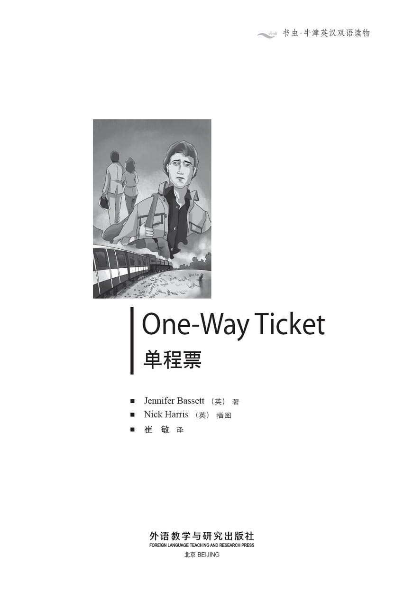
版权页
京权图字：01-2013-7818
Published by arrangement with Oxford University Press for sale in the People's Republic of China only and not for export therefrom. This edition is for sale in the mainland of China only, excluding Hong Kong SAR, Macao SAR and Taiwan.
© Oxford University Press 2008
Oxford is a registered trademark of Oxford University Press
图书在版编目（CIP）数据
单程票：英汉对照 ／（英）巴西特（Bassett, J.）著；（英）哈里斯（Harris, N.）绘；崔敏译．— 北京：外语教学与研究出版社，2013.12
（书虫·牛津英汉双语读物）
书名原文：One-way ticket
ISBN 978-7-5135-3927-2
Ⅰ．①单… Ⅱ．①巴… ②哈… ③崔… Ⅲ．①英语－汉语－对照读物②短篇小说－小说集－英国－现代 Ⅳ．①H319.4：I
中国版本图书馆CIP数据核字（2013）第309202号
出版人 蔡剑峰
责任编辑 徐传斌
封面设计 蔡 颖
出版发行 外语教学与研究出版社
社 址 北京市西三环北路19号（100089）
网 址 http://www.fltrp.com
版 次 2014年1月第1版
书 号 ISBN 978-7-5135-3927-2
制售盗版必究 举报查实奖励
版权保护举报电话：(010)88817519
内容简介
内容简介
火车是一个封闭的世界。每个包厢都像一个小房间，有门有窗。不过火车行驶时，你不能出去。外面的世界很遥远，你可以不去想你的家庭、工作和朋友。在火车上，你和陌生人坐在一起。你对他们一无所知，但却要和他们在同一个小房间里，在他们旁边坐上几个小时，或许几天。你无法摆脱他们。
随着车轮滚滚向前，这些故事向我们展现了三个不同的人物。一个年轻漂亮的妻子——和她的新婚丈夫穿过英格兰的绿色山丘去度假。一个逍遥自在的年轻人——穿越南斯拉夫的山脉去找工作。一个明达事理的中年人——穿过芬兰的森林湖泊北上，期盼有个安静的旅程。
三段不同的旅行，三个不同的人物——都关在火车这个封闭的世界里——一个什么事情都可能发生的地方。
ONE-WAY TICKET SHORT STORIES
ONE-WAY TICKET
SHORT STORIES
A train is a closed world. Each carriage is like a small room, with windows and doors, but you can't get out when the train is moving. The world outside is far away, and you can forget your home, your work, your friends. On a train you sit with strangers. You don't know anything about them, but you sit next to them for hours, or perhaps days, in the same small room. You can't get away from them.
As the wheels of the train turn, these stories show us three different people. A beautiful young wife – going on holiday with her new husband, through the green hills of England. A carefree young man – travelling across the mountains of Yugoslavia, looking for work. A sensible middle-aged man – travelling north through the forests and lakes of Finland, hoping for a quiet journey.
Three different journeys, three different people – all locked in the closed world of the train... where anything can happen.
目录
The Girl with Green Eyes
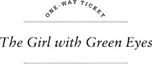
'Of course,' the man in the brown hat said, 'there are good policemen and there are bad policemen, you know.'
'You're right,' the young man said. 'Yes. That's very true. Isn't it, Julie?' He looked at the young woman next to him.
Julie didn't answer and looked bored. She closed her eyes.
'Julie's my wife,' the young man told the man in the brown hat, 'she doesn't like trains. She always feels ill on trains.'
'Oh yes?' the man in the brown hat said. 'Now my wife – she doesn't like buses. She nearly had an accident on a bus once. It was last year... No, no, it wasn't. It was two years ago. I remember now. It was in Manchester.' He told a long, boring story about his wife and a bus in Manchester.
It was a hot day and the train was slow. There were seven people in the carriage. There was the man in the brown hat; the young man and his wife, Julie; a mother and two children; and a tall dark man in an expensive suit.
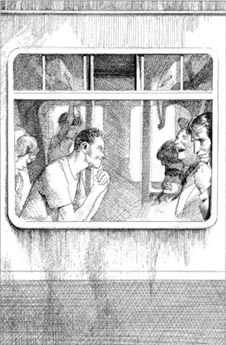
The young man's name was Bill. He had short brown hair and a happy smile. His wife, Julie, had long red hair and very green eyes – the colour of sea water. They were very beautiful eyes.
The man in the brown hat talked and talked. He had a big red face and a loud voice. He talked to Bill because Bill liked to talk too. The man in the brown hat laughed a lot and when he laughed, Bill laughed too. Bill liked talking and laughing with people.
The two children were hot and bored. They didn't want to sit down. They wanted to be noisy and run up and down the train.
'Now sit down and be quiet,' their mother said. She was a small woman with a tired face and a tired voice.
'I don't want to sit down,' the little boy said, 'I'm thirsty.'
'Here. Have an orange,' his mother said. She took an orange out of her bag and gave it to him.
'I want an orange too,' the little girl said loudly.
'All right. Here you are,' said her mother. 'Eat it nicely, now.'
The children ate their oranges and were quiet for a minute.
Then the little boy said, 'I want a drink. I'm thirsty.'
The tall dark man took out his newspaper and began to read. Julie opened her eyes and looked at the back page of his newspaper. She read about the weather in Budapest and about the football in Liverpool. She wasn't interested in Budapest and she didn't like football, but she didn't want to listen to Bill and the man in the brown hat. 'Talk, talk, talk,' she thought. 'Bill never stops talking.'
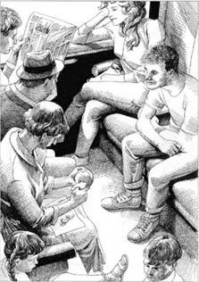
Julie opened her eyes and looked at the back page of the tall dark man's newspaper.
Then suddenly she saw the tall man's eyes over the top of his newspaper. She could not see his mouth, but there was a smile in his eyes. Quickly, she looked down at the newspaper and read about the weather in Budapest again.
The train stopped at Dawlish station and people got on and got off. There was a lot of noise.
'Is this our station?' the little girl asked. She went to the window and looked out.
'No, it isn't. Now sit down,' her mother said.
'We're going to Penzance,' the little girl told Bill. 'For our holidays.'
'Yes,' her mother said. 'My sister's got a little hotel by the sea. We're staying there. It's cheap, you see.'
'Yes,' the man in the brown hat said. 'It's a nice town. I know a man there. He's got a restaurant in King Street. A lot of holiday people go there. He makes a lot of money in the summer.' He laughed loudly. 'Yes,' he said again. 'You can have a nice holiday in Penzance.'
'We're going to St Austell,' Bill said. 'Me and Julie. It's our first holiday. Julie wanted to go to Spain, but I like St Austell. I always go there for my holidays. It's nice in August. You can have a good time there too.
Julie looked out of the window. 'Where is Budapest?' she thought. 'I want to go there. I want to go to Vienna, to Paris, to Rome, to Athens.' Her green eyes were bored and angry. Through the window she watched the little villages and hills of England.
The man in the brown hat looked at Julie. 'You're right,' he said to Bill. 'You can have a good time on holiday in England. We always go to Brighton, me and the wife. But the weather! We went one year, and it rained every day. Morning, afternoon, and night. It's true. It never stopped raining.' He laughed loudly. 'We nearly went home after the first week.'
Bill laughed too. 'What did you do all day, then?' he asked.
Julie read about the weather in Budapest for the third time. Then she looked at the tall man's hands. They were long, brown hands, very clean. 'Nice hands,' she thought. He wore a very expensive Japanese watch. 'Japan,' she thought. 'I'd like to go to Japan.' She looked up and saw the man's eyes again over the top of his newspaper. This time she did not look away. Green eyes looked into dark brown eyes for a long, slow minute.
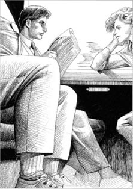
Green eyes looked into dark brown eyes for a long, slow minute.
After Newton Abbot station the guard came into the carriage to look at their tickets. 'Now then,' he said, 'where are we all going?'
'This train's late,' the man in the brown hat said. 'Twenty minutes late, by my watch.'
'Ten minutes,' the guard said. 'That's all.' He smiled at Julie.
The tall dark man put his newspaper down, found his ticket, and gave it to the guard. The guard looked at it.
'You're all right, sir,' he said. 'The boat doesn't leave Plymouth before six o'clock. You've got lots of time.'
The tall man smiled, put his ticket back in his pocket and opened his newspaper again.
Julie didn't look at him. 'A boat,' she thought. 'He's taking a boat from Plymouth. Where's he going?' She looked at him again with her long green eyes.
He read his newspaper and didn't look at her. But his eyes smiled.
The train stopped at Totnes station and more people got on and off.
'Everybody's going on holiday,' Bill said. He laughed. 'It's going to be wonderful. No work for two weeks. It's a nice, quiet town, St Austell. We can stay in bed in the mornings, and sit and talk in the afternoons, and have a drink or two in the evenings. Eh, Julie?' He looked at his wife. 'Are you all right, Julie?'
'Yes, Bill,' she said quietly. 'I'm OK.' She looked out of the window again. The train went more quickly now, and it began to rain. Bill and the man in the brown hat talked and talked. Bill told a long story about two men and a dog, and the man in the brown hat laughed very loudly.
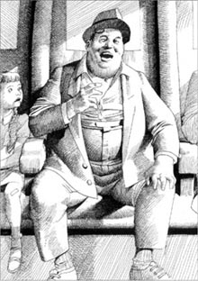
The man in the brown hat laughed very loudly.
'That's a good story,' he said. 'I like that. You tell it very well. Do you know the story about...' And he told Bill a story about a Frenchman and a bicycle.
'Why do people laugh at these stories?' Julie thought. 'They're so boring!'
But Bill liked it. Then he told a story about an old woman and a cat, and the man in the brown hat laughed again. 'That's good, too. I don't know. How do you remember them all?"
'Because,' Julie thought, 'he tells them every day.'
'I don't understand,' the little girl said suddenly. She looked at Bill. 'Why did the cat die?'
'Shhh. Be quiet,' her mother said. 'Come and eat your sandwiches now.'
'That's all right,' Bill said. 'I like children.'
The man in the brown hat looked at the children's sandwiches. 'Mmm, I'm hungry, too,' he said. 'You can get sandwiches in the restaurant on this train.' He looked at Bill. 'Let's go down to the restaurant, eh? I need a drink too.'
Bill laughed. 'You're right. It's thirsty work, telling stories.'
The two men stood up and left the carriage.
The little girl ate her sandwich and looked at Julie. 'But why did the cat die?' she asked.
'I don't know,' Julie said. 'Perhaps it wanted to die.'
The little girl came and sat next to Julie. 'I like your hair,' she said. 'It's beautiful.' Julie looked down at her and smiled.
For some minutes it was quiet in the carriage. Then the tall dark man opened his bag and took out a book. He put it on the seat next to him, and looked at Julie with a smile. Julie looked back at him, and then down at the book. Famous towns of Italy, she read. Venice, Florence, Rome, Naples. She looked away again, out of the window at the rain. 'Two weeks in St Austell,' she thought. 'With Bill. In the rain.'
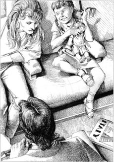
Famous towns of Italy, Julie read. Venice, Florence, Rome, Naples.
After half an hour the two men came back to the carriage.'There are a lot of people on this train,' Bill said. 'Do you want a sandwich, Julie?'
'No,' she said. 'I'm not hungry. You eat them.'
The train was nearly at Plymouth. Doors opened and people began to move. 'A lot of people get on here,' the man in the brown hat said.
The tall dark man stood up and put his book and his newspaper in his bag. Then he picked up his bag and left the carriage. The train stopped at the station. A lot of people got on the train, and two women and an old man came into the carriage. They had a lot of bags with them. Bill and the man in the brown hat stood up and helped them. One of the women had a big bag of apples. The bag broke and the apples went all over the carriage.
'Oh damn!' she said.
Everybody laughed, and helped her to find the apples. The train moved away from Plymouth station. After a minute or two everybody sat down and the woman gave some apples to the children.
'Where's Julie?' Bill said suddenly. 'She's not here.'
'Perhaps she went to the restaurant,' the man in the brown hat said.
'But she wasn't hungry,' Bill said. 'She told me.'
The little girl looked at Bill. 'She got off the train at Plymouth,' she said. 'With the tall dark man. I saw them.'
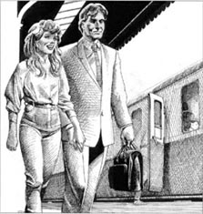
'She got off the train at Plymouth. With the tall dark man.'
'Of course she didn't!' Bill said. 'She's on this train. She didn't get off.'
'Yes, she did,' the children's mother said suddenly. 'I saw her too. The tall man waited for her on the platform.'
'He waited for her?' Bill's mouth was open. 'But... But he read his newspaper all the time. He didn't talk to Julie. And she never talked to him. They didn't say a word.'
'People don't always need words, young man,' the children's mother said.
'But she's my wife!' Bill's face was red and angry. 'She can't do that!' he said loudly. He stood up. 'I'm going to stop the train.' Everybody looked at him and the two children laughed.
'No,' the man in the brown hat said, 'no, you don't want to do that. Sit down and eat your sandwiches, my friend.'
'But I don't understand. Why did she go? What am I going to do?' Bill's face was very unhappy. After a second or two he sat down again. 'What am I going to do?' he said again.
'Nothing,' the man in the brown hat said. He ate his sandwich slowly. 'Go and have your holiday in St Austell. You can have a good time there. Forget about Julie. Those green eyes, now.' He took out a second sandwich and began to eat it. 'I knew a woman once with green eyes. She gave me a very bad time. No, you want to forget about Julie.'
bored adj. not interested 厌烦的
boring adj. not interesting 乏味的
carriage n. a 'room' on a train 车厢
loud adj. not quiet; with a lot of noise 大声的
voice n. you talk with your voice 嗓音
page n. one piece of paper in a book, newspaper 〔书、报纸的〕页
station n. trains stop at stations for people to get on or off 车站
holiday n. days and weeks when people do not go to work 假期
restaurant n. a place where you can buy a meal and eat it 餐馆
clean adj. not dirty 干净的
guard n. a man who works on a train 列车长
boat n. a small ship 小船
seat n. a 'chair' on the train 座位
pick up to take something in the hand 拿起
damn interjection a word to show that you are angry 〔用于表示极度生气〕该死
platform n. trains stop next to a platform in a station, and people got off the train onto the platform 站台
碧眼姑娘
碧眼姑娘
“当然了，”戴棕色帽子的男人说道，“要知道，有好警察，也有坏警察。”
“没错。”年轻男人说道，“是的，确实如此。你说呢，朱莉？”他望着身旁的年轻女人。
朱莉没有回答，她感到无聊，闭上了眼睛。
“朱莉是我的妻子。”年轻男人跟戴棕色帽子的男人说道，“她不喜欢坐火车，她在车上总是感觉不舒服。”
“哦，是吗？”戴棕色帽子的男人回答。“嗳，我妻子——她不喜欢坐巴士。她有一次差点在一辆巴士上发生意外。就是去年……不，不，不是。是两年前。现在我想起来了，是在曼彻斯特。”他讲了一个关于他老婆在曼彻斯特坐巴士的又长又无聊的故事。
那天很热，火车又开得慢。包厢里有七个人——戴棕色帽子的男人，年轻男人和他的妻子朱莉，一个妈妈和两个孩子，还有一个身材高大、皮肤黝黑、穿着昂贵西装的男人。
年轻人名叫比尔。他留着棕色的短发，脸上带着幸福的笑容。他的妻子朱莉有一头红色的长发和碧绿的眼睛——像海水一样的颜色。那是一双非常美丽的眼睛。
戴棕色帽子的男人不停地说着。他有一张红色的大脸，大嗓门。他和比尔聊天，因为比尔也喜欢聊天。戴棕色帽子的男人常常大笑，他笑的时候，比尔也会跟着笑。比尔喜欢和人说说笑笑。
两个孩子又热又无聊。他们不想坐着，想在车厢里来回奔跑、吵吵闹闹。
“坐下来，消停一会儿。”孩子的妈妈说道。她身材娇小，神情和声音都显得疲惫。
“我不想坐着。”小男孩说道，“我渴了。”
“来，吃个橘子。”他妈妈说着从包里拿出一个橘子给他。
“我也想吃橘子。”小女孩大声说道。
“好吧，给你。”妈妈说道，“喏，乖乖地吃。”
两个孩子吃着橘子，安静了一会儿。
没一会儿小男孩说：“我要喝饮料，我口渴。”
那个黝黑的高个子男人拿出报纸看了起来。朱莉睁开眼睛，看着报纸背面的内容。她看了看布达佩斯的天气和利物浦的足球比赛情况。她对布达佩斯不感兴趣，也不喜欢足球，只是不想听比尔和那个戴棕色帽子男人的谈话。“说，说，说。”她心想，“比尔就不会停一下。”
突然，她从报纸的上方看到了高个子男人的眼睛。虽然看不到他的嘴，但是朱莉能感觉到他眼中的笑意。她迅速低头看向报纸，又看了看布达佩斯的天气情况。
火车停在道利什车站。旅客们上上下下，十分嘈杂。
“我们到站了吗？”小女孩问道。她来到窗边，向外望去。
“没有，坐好。”女孩的妈妈说道。
“我们要去彭赞斯，”小女孩告诉比尔，“去度假。”
“是的。”女孩的妈妈说道，“我妹妹在海边有一家小旅馆。我们住在那里会便宜些。”
“没错，”戴棕色帽子的男人说道，“那是个不错的小镇。我认识一个当地人，他在国王街有一家餐厅。很多度假的人都去那里吃饭，他夏天能赚很多钱。”他大声笑着，“没错。”他又说，“在彭赞斯可以度过一个愉快的假期。”
“我们要去圣奥斯特尔，”比尔说道，“我和朱莉。这是我们第一次度假，朱莉想去西班牙，可我喜欢圣奥斯特尔。我经常去那里度假。那里的八月很美。你们在圣奥斯特尔也会玩得愉快的。”
朱莉望着窗外。“布达佩斯到底在哪儿呀？”她心想，“我想去那里。我想去维也纳，想去巴黎，想去罗马，想去雅典。”她绿色的眼眸中透着厌倦和气恼。她透过窗户看着英格兰的小村庄和山丘。
戴棕色帽子的男人看着朱莉。“你说得对，”他对比尔说道，“在英格兰度假可以很愉快。我和太太就经常去布赖顿。不过那儿的天气啊！有一年我们去了，那里每天都在下雨。上午下，下午下，晚上还下。没骗你，雨从没停过。”他大声笑着，“我们去了一个礼拜就差点回家了。”
比尔也笑了起来。“那你们整天都干什么？”他问道。
朱莉第三次看报纸上布达佩斯的天气。后来，她看着高个子男人的手，那是一双修长、黝黑的手，十分干净。“漂亮的手。”她心想。他戴着一块昂贵的日本手表。“日本，”她想，“我想去日本。”她抬起头，再次从报纸上方看到了那个男人的眼睛。这次她没有躲开。绿色的眼睛凝视着深褐色的眼睛，看了足有漫长的一分钟。
过了牛顿阿伯特车站后，列车长来到包厢查票。“那么，”列车长说道，“大家都要去哪儿？”
“火车晚点了。”戴棕色帽子的男人说道，“从我的手表来看，晚了二十分钟。”
“十分钟。”列车长说道，“就晚了十分钟。”他冲着朱莉微笑道。
黝黑的高个子男人放下报纸，找出车票，递给了列车长。列车长看了一眼。
“您的好了，先生。”他说道，“船在六点钟以后才离开普利茅斯，您的时间很充裕。”
高个子男人笑了笑，把车票放回口袋，又翻开了报纸。
朱莉没有看他。“船，”她心里想着，“他到普利茅斯坐船要去哪里？”她那双细长的碧眼盯着他。
男人只管读着报纸，并没看朱莉。但是他的眼睛却含着笑意。
火车停在托特尼斯车站，上下车的人更多了。
“大家都要去度假。”比尔笑道，“真是太好了！两周都不用工作。圣奥斯特尔是一个安静怡人的小城。我们早上可以睡懒觉，下午坐着聊聊天，晚上小喝两杯。是吧，朱莉？”他看着妻子，“你没事吧，朱莉？”
“没事，比尔。”朱莉平静地说道，“我很好。”她又看着窗外。火车跑得更快了，外面下起雨来。比尔和戴棕色帽子的男人继续聊着。比尔讲了一个很长的故事，内容是关于两个男人和一只狗的，戴棕色帽子的男人哈哈大笑起来。
“这故事不错，”他说道，“我喜欢。你讲得很好。你知不知道那个关于……”他给比尔讲了一个法国男人和一辆自行车的故事。
“为什么还会有人觉得这种故事好笑？”朱莉心里想，“它们太无聊了！”
但是比尔喜欢。接着比尔讲了一个老太太和一只猫的故事。戴棕色帽子的男子又笑了起来。“这个故事也好，我很好奇，你是怎么记住这些故事的？”
“因为，”朱莉心想，“他每天都讲。”
“我不明白，”小女孩突然说，她看着比尔，“猫为什么死了呢？”
“嘘！别乱插嘴。”她妈妈说道，“过来吃三明治吧。”
“没关系。”比尔说道，“我喜欢孩子。”
戴棕色帽子的男人看着孩子们的三明治。“嗯，我也饿了。”他说，“餐车上可以买到三明治。”他看着比尔说：“我们一起去餐车，如何？我还想喝点东西。”
比尔笑着说：“你说的没错，讲故事容易嘴巴干。”
两个男人起身离开了包厢。
小女孩吃着三明治，看着朱莉。“可是猫为什么死了呢？”她问。
“我不知道，”朱莉说道，“也许它想死吧。”
小女孩来到朱莉身边坐下。“我喜欢你的头发，”她说道，“很漂亮。”朱莉低头看着她笑了。
有几分钟，包厢里静静的。那个黝黑的高个子男人打开包，拿出一本书。他把书放在身边的座位上，微笑地看着朱莉。朱莉也看着他，然后低头看那本书。意大利名城，她读着。威尼斯，佛罗伦萨，罗马，那不勒斯。她又转过头去看着车窗外面的雨。“在圣奥斯特尔待两周。”她心里想，“和比尔，还是雨天。”
半小时后，两个男人回到包厢。“火车上人好多。”比尔说道，“你要吃三明治吗，朱莉？”
“不用了。”朱莉说，“我不饿，你吃吧。”
火车马上要到普利茅斯了。包厢门打开后，人们走动了起来。“很多人在这一站上车。”戴棕色帽子的男人说道。
黝黑的高个子男人站起身，把书和报纸放进包里，然后拎起包离开了包厢。火车进站停下了。很多人上了车，两个女人和一个老先生走进包厢。他们大包小包拎了好多。比尔和戴棕色帽子的男人站起来帮他们。其中一个女人带了一大包苹果。包坏了，苹果掉了一地。
“唉，该死！”女人说道。
大家都笑着帮她捡苹果。火车离开了普利茅斯车站。一两分钟后，大家都坐了下来。那个女人给了孩子几个苹果。
“朱莉呢？”比尔突然说，“她不见了。”
“可能她去餐车那儿了。”戴着棕色帽子的男人说道。
“可她不饿呀。”比尔说道，“她跟我说的。”
“小女孩看着比尔。“她在普利茅斯下车了，”她说，“和那个黝黑的高个子男人一起下车的。我看见他们了。”
“不可能。”比尔说道，“她在火车上，她没有下车。”
“她确实下车了。”孩子的妈妈突然说道，“我也看见她了。高个子男人在站台上等着她。”
“他在等她？”比尔张大了嘴，“可是……可是他一直在看报纸，他没有和朱莉说过话，朱莉也没和他说话。他们一句话都没说过。”
“人有时不需要通过语言也能交流的，年轻人。”孩子的妈妈说道。
“可她是我的妻子。”比尔的脸气得通红。“她不能这么做。”他大声说着并站起身来。“我要让火车停下。”大家都看着他，两个孩子笑了起来。
“别。”戴棕色帽子的男人说道，“别，你不用这样。坐下来吃你的三明治，朋友。”
“可我不明白。她为什么要走？我怎么办？”比尔满脸沮丧。不一会儿他又坐下来。“我该怎么办？”他又嘟囔了一遍。
“什么也不做。”戴棕色帽子的男人说道，他慢悠悠地吃着三明治。“去圣奥斯特尔度假。你可以在那里过得很开心。行了，忘掉朱莉，忘掉那双碧眼吧。”他又拿出一个三明治吃了起来，“我曾经认识一个碧眼女人。她让我吃了很多苦头。不，你应该忘掉朱莉。”
South for the Winter
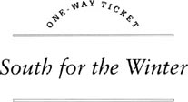
I never stay in one country for a long time. It gets boring. I like to move on, see new places, meet different people. It's a good life, most of the time. When I need money, I get a job. I can do most things – hotel and restaurant work, building work, picking fruit. In Europe you can pick fruit most of the year. You need to be in the right country at the right time, of course. It's not easy work, but the money's not bad.
I like to go south in the winter. Life is easier in the sun, and northern Europe can get very cold in the winter. Last year, 1989 it was, I was in Venice for October. I did some work in a hotel for three weeks, then I began slowly to move south. I always go by train when I can. I like trains. You can walk about on a train, and you meet a lot of people.
I left Venice and went on to Trieste. There I got a cheap ticket for the slow train to Sofia, in Bulgaria. This train goes all down through Yugoslavia, and takes a long time – a day and a half. But that didn't matter to me.
The train left Trieste at nine o'clock on a Thursday morning. There weren't many people on it at first, but at Zagreb more people got on. Two girls went along the corridor, past my carriage. They looked through the door, but they didn't come in. Then an old woman came in, sat down and went to sleep. The two girls came back along the corridor and looked into the carriage again. The train left Zagreb and I looked out of the window for about ten minutes, then I went to sleep too.
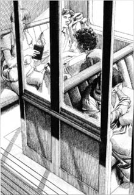
After the train left Zagreb, I went to sleep.
When I opened my eyes again, the two girls were in the carriage, they looked friendly, so I said, 'Hullo.'
'Hi!' they said.
'You're American,' I said. 'Or Canadian. Right?'
'American,' the taller girl said. She smiled. 'And you're twenty-three, your name's Tom Walsh, you've got blue eyes, and your mum lives in Burnham-on-Sea, UK. Right?'
'How did you know all that?' I asked.
The second girl laughed. 'She looked at your passport. It's in your coat pocket.'
'Oh. Right.' My coat was on the seat next to me. I took my passport out of my pocket and put it back in my bag. 'Who are you, then?' I asked.
They told me. Melanie and Carol from Los Angeles, USA. They liked Europe, they said. They knew a lot of places – Britain, Holland, Denmark, Germany, France, Spain, Italy, Yugoslavia, Bulgaria, Greece...
'I'm going to Bulgaria now,' I said. 'For about a month. Then I'm going south for the winter. Cyprus, or perhaps North Africa.'
'Oh yes?' they said. 'We love Bulgaria. Sofia's a great town. Wonderful.'
'What do you do about money?' I asked.
'Well, you know,' Carol smiled. 'Sometimes we get a little job. This and that. But what about you?'
'Yeah, come on,' Melanie said. 'Tell us about you – Tom Walsh with the blue eyes and the mum in Burnham-on-Sea. What are you doing with your life, hey?'
So I told them. They were nice girls. They were older than me, perhaps twenty-seven or twenty-eight, but I liked them. We talked and laughed for hours. I told them a lot of stories about my life. Some of the stories were true, some weren't. But the girls laughed, and said I was a great guy. I asked them about Bulgaria, because I didn't know the country. They knew Sofia well, they said.
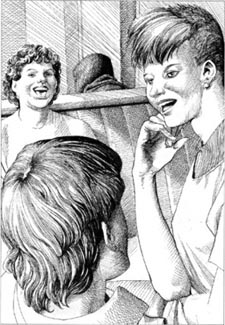
We talked and laughed for hours.
'Hey, Carol,' Melanie said. 'We're staying in Bela Palanka for a day or two. But let's go over to Sofia this weekend and meet Tom there. We can meet him on Saturday night at the Hotel Marmara.'
'Yeah! It's a good hotel,' Carol told me. 'Cheap, but good. What do you think, Tom?'
'Great!' I said. 'Let's do that.'
The train was very slow. We got to Belgrade at six o'clock in the evening, and a lot of people got off. There were only me and the girls in the carriage then. The guard came and looked at our tickets, and went away again.
Carol looked at Melanie. 'Hey, Mel,' she said. 'Why don't you and Tom go along to the restaurant? I'm not hungry, and I want to sleep for an hour.'
'Er... Food's very expensive on the train,' I said. 'I haven't got much money just now. I'm going to get a job in Sofia.'
'Oh Tom!' Melanie said. 'Why didn't you tell us? Look, you're a nice guy, right? We're OK for money this week. We can buy you a meal.'
'Of course we can,' Carol said. 'And look, in Sofia, we can take you to the best restaurant in town. It's a great place. We love it.'
What could I say? I was hungry. They had money, I didn't. So Melanie and I went to the restaurant and had a meal. When we came back, Carol was still alone in the carriage. Melanie put her feet on the seat and went to sleep.
At Nis some more people got on the train, and two old men came into out carriage. They looked at Melanie's feet on the seat, and talked in loud voices. Carol laughed, and Melanie opened her eyes and sat up.
'Are we nearly there?' she asked Carol, and looked out of the window.
'Yeah. About half an hour, I think.'
'Why are you getting off at Bela Planka?' I asked. 'What are you going to do there?'
Melanie smiled. 'Find a cheap hotel, meet people, take a look at the town... you know.'
'Just for a day or two,' Carol said.
'But there's nothing there!'
'Oh well, you never know,' Melanie laughed. 'See you in Sofia, right? On Saturday night.'
'The Hotel Marmara, OK? Eight o'clock,' Carol said. 'Don't forget now!'
'Ok. Great,' I said. 'See you there.'
The train came into Bela Palanka and stopped. The two girls got off and stood on the platform. They smiled at me through the window. 'Saturday. Eight o'clock,' Melanie shouted.
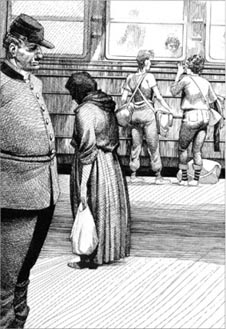
'Saturday. Eight o'clock,' Melanie shouted.
'OK,' I called. They couldn't hear me because of the noise in the station. They smiled again, picked up their bags and walked away. Nice girls. I'm going to have a great time in Sofia, I thought.
The train left Yugoslavia and crossed into Bulgaria at two o'clock in the morning. Then the train stopped at some village – I don't remember the name. I ate an apple and looked out of the window.
Suddenly there were a lot of policemen on the train. Everybody in the carriage sat up and began to talk.
'What's happening?' I said in Italian to the old man next to me.
'I don't know,' he said in bad Italian. 'Perhaps they're looking for somebody. Look. The police are taking some people off the train.'
Then two policemen came into our carriage, a tall thin one and a short fat one. They looked at everybody carefully... and then they looked at me again.
'Come with us, please,' the fat policeman said in English.
'What? Me?' I said. 'Why? What's the matter?'
'And bring your bag with you,' the tall policeman said.
I began to ask a question, but policemen never like questions from young men with long hair. So I stayed quiet, picked up my bag, and went with them.
In the station building there were a lot more policemen, and some people from the train. They were all young people, I saw. Some were afraid, some were bored. The police looked in everybody's bags, and then the people went back to the train.
My two policemen took me to a table. 'Your passport, please,' the fat policeman said, 'and open your bag.'
They looked at my passport and I opened my bag. There was a young policewoman with red hair at the next table. She had a nice face, so I smiled at her and she smiled back.
'Aaah!' the tall policeman said suddenly. All my dirty shirts and clothes were out on the table. The policeman picked up my bag and turned it over. On to the table, out of my bag, fell packet after packet of US American dollars. Nice, new dollars. Fifty-dollar notes in big packets. A lot of money.
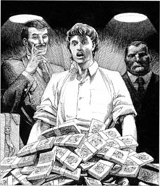
Nice, new dollars. Fifty-dollar notes in big packets. A lot of money.
My mouth opened and stayed open. I couldn't find my voice. I was suddenly a very interesting person, and a lot of police ran up to our table and stood behind me.
'50,000... 100,000... 150,000... There's 200,000 dollars here,' the tall policeman said. 'What an interesting bag, Mr Tom Walsh!'
I found my voice again quickly. 'But it's not my bag!' I shouted.
There was a big, happy smile on that policeman's face. 'Well,' he said, 'it's got your name on it. Look!'
So I looked, and of course there was my name, and yes of course, it was my bag. So how did 200,000 US dollars get into my bag?
'You cannot bring US dollars into this country,' the fat policeman said. He had very short grey hair and little black eyes. He didn't smile once.
'But I didn't bring them,' I said quickly. 'They're not my dollars. I never saw them before in my life, and—'
There was a lot of noise in the station. I looked out of the window and saw my train. Slowly, it began to move.
'Hey!' I shouted. 'That's my train—'
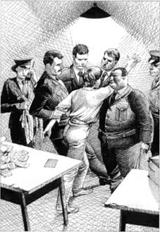
'Hey!' I shouted. 'That's my train —'
The tall policeman laughed. It was a great day for him. 'Oh no,' he said. 'You're not getting back on that train. You're staying here with us, in our beautiful country.' He smiled, happily.
So I never got to Sofia on Saturday. I was very unhappy about that. I wanted to have a little talk with Melanie and Carol, ask them one or two questions, you know. You're a nice guy, Tom. See you in Sofia, OK? Take you to the best restaurant in town. Yeah. Great.
And I never got down to Cyprus or North Africa that winter. Oh well, I live and learn. It's not an easy life, in prison. But it's warm in winter, and the food's not bad. And I'm meeting some interesting people. There's a man from Georgia, USSR – Boris, his name is. He comes from a place by the Black Sea. He's a great guy. When we get out of here, he and I are going down to Australia... Brisbane perhaps, or Sydney. Get a job on a ship, start a new life. Yeah, next year's going to be OK.
life n. the time when you are alive, not dead 生活
job n. work that you do for money 工作
fruit n. the part of a plant, tree, or bush that contains seeds and is often eaten as food 水果
corridor n. the long narrow place on a train with doors to the carriage 走廊
great adj. very good 非常好
yeah adv. yes 是
guy n. a man, especially a young man 〔尤指青年〕男子
meal n. food that you eat at a certain time (e.g. breakfast, dinner) 餐，饭
shout v. to say something very loudly 大声说
clothes n. the things that people wear to cover their bodies or to keep warm 衣服
unhappy adj. not happy 不快乐
prison n. a large building where people are kept as a punishment for a crime 监狱
去南方过冬
去南方过冬
我从不会在一个国家待很长时间，因为日子久了会让人觉得无聊。我喜欢四处走，去看看新的地方，结识不同的人。这样的生活很不错，至少多数时候是这样的。我需要钱时，就找份工作。我会做很多工作——酒店和餐厅的工作，建筑工作，采摘水果。在欧洲，一年中大部分时间都能采摘水果。当然，你需要在对的时间去到对的国家。采摘水果这种活儿并不轻松，但报酬不错。
我喜欢去南方过冬。生活在阳光下更舒服，而北欧的冬天会特别冷。去年，也就是1989年，我十月份是在威尼斯度过的。我在一家酒店里干了三周的活儿，然后开始慢慢往南走。如果可以的话，我通常会坐火车。我喜欢火车。你可以在火车上四处走动，结识很多人。
我离开威尼斯去了的里雅斯特。在那里我买到一张去保加利亚索非亚的便宜慢车车票。火车一路南行穿越南斯拉夫，要花很长时间——一天半。但这对我来说无所谓。
火车在一个星期四的早晨九点钟离开了的里雅斯特。起初车上没有多少人，但是在萨格勒布有很多人上了车。两个女孩沿着过道往前走，路过我的包厢。她们往门里看了看，但没进来。接着一个老妇人走进来，坐下后就睡着了。那两个女孩沿着过道走了回来，再次朝包厢里看了看。火车离开了萨格勒布，我向窗外望了大约十分钟，后来也睡着了。
当我再睁开眼时，那两个女孩已经在包厢里了。她们看起来很友好，于是我说：“你们好。”
“你好！”她们说道。
“你们是美国人，”我说道，“或者是加拿大人，对吧？”
“美国人。”高个子女孩说道，她笑了笑，“你23岁，你的名字是汤姆·沃尔什，你有一双蓝眼睛，你妈妈住在英国的滨海伯纳姆，对吗？”
“这些你是怎么知道的？”我问道。
另一个女孩笑了起来：“她看了你的护照。你的护照在大衣口袋里。”
“哦，是的。”我的外套就放在身边的座位上。我把护照从口袋里拿出来，放回包里。
“那么，你们是谁呢？”我问道。
她们自称梅拉妮和卡萝尔，来自美国洛杉矶。她们说她们喜欢欧洲。她们去过很多地方——英国、荷兰、丹麦、德国、法国、西班牙、意大利、南斯拉夫、保加利亚、希腊……
“我要去保加利亚，”我说，“大概待上一个月，然后去南方过冬，到塞浦路斯，也可能是北非。”
“哦，真的吗？”她们说道，“我们喜欢保加利亚，索非亚是一个美丽的城市。很棒。”
“你们靠什么挣钱？”我问道。
“这个，”卡萝尔笑了笑，“有时我们会找个小活儿，各种活儿。那你呢？”
“是呀，快来说说。”梅拉妮说道，“跟我们说说你和你妈的事——蓝眼睛的汤姆·沃尔什和住在滨海伯纳姆的妈妈。你们是怎么生活的，啊？”
于是我告诉了她们。她们是很好的女孩。比我大些，可能二十七八岁，但我喜欢她们。我们有说有笑地聊了好几个小时。我给她们讲了许多我自己的事。有些是真的，有些不是。但是她们笑了，说我是个很棒的人。我问她们保加利亚的情况，因为我对这个国家并不了解。她们说她们对索非亚很熟悉。
“喂，卡萝尔。”梅拉妮说道，“我们要在贝拉帕兰卡待上一两天，不妨这周末我们去索非亚找汤姆。我们可以周六晚上和他在马尔马拉宾馆见面。”
“是啊！那是家不错的宾馆。”卡萝尔跟我说，“便宜，但很好。你觉得怎么样，汤姆？”
“太好了！”我说，“就这么办。”
火车开得十分缓慢。我们在晚上六点钟到了贝尔格莱德，很多人在那儿下车。包厢里就只剩下了我和那两个女孩。列车长过来查票，查完又走了。
卡萝尔看着梅拉妮。“嗨，梅尔。”卡萝尔说道，“为什么你不和汤姆一起去餐车呢？我不饿，想睡一个小时。”
“哦……火车上用餐很贵的。”我说，眼下我没有太多钱。我打算去索非亚找份工作。”
“啊，汤姆！”梅拉妮说道，“你怎么不告诉我们？听我说，你是一个好人，对吗？我们这周的钱足够了，可以请你吃一顿。”
“当然可以。”卡萝尔说道，“瞧，在索非亚我们可以带你去城里最好的餐馆。那是个很不错的地方，我们很喜欢那里。”
我能说什么呢？我饿了。她们有钱，我没有。于是我和梅拉妮去餐车吃了顿饭。我们回来后，卡萝尔依然一个人在包厢里。梅拉妮把脚放到座位上，睡着了。
在尼什，又有一些人上了车，有两个老先生来到了我们的包厢。他们看了看座位上梅拉妮的脚，便大声说起话来。卡萝尔笑了，梅拉妮睁开眼睛坐了起来。
“我们快到了吗？”她问卡萝尔，然后望着窗外。
“是的。大概还有半个小时，我觉得。”
“为什么你们要在贝拉帕兰卡下车？”我问道，“你们去那里干什么？”
梅拉妮笑了笑：“找一家便宜的宾馆，接触一些人，看一看这个城市……你懂的。”
“也就一两天。”卡萝尔说道。
“可那里什么都没有。”
“好吧，也说不定。”梅拉妮笑了起来，索非亚见，好吗？周六晚上。”
“马尔马拉宾馆，行吗？八点。”卡萝尔说道，“哎，别忘了！”
“好的，太棒了。”我说，“不见不散。”
火车驶入贝拉帕兰卡停下了。那两个女孩下了车，站在月台上。她们隔窗向我微笑着。“周六，八点。”梅拉妮大声说道。
“好的。”我喊道。因为车站里太吵，她们听不到我说的话。她们再次向我微笑，拎起背包，转身走了。多好的女孩。我想我将会在索非亚度过一段愉快的时光。
火车离开南斯拉夫，在凌晨两点钟驶入保加利亚。后来火车经停了某个小镇——我没记住名字。我吃了个苹果，看着窗外。
突然火车上出现了很多警察。包厢里的所有人都坐直身子，议论起来。
“发生什么事了？”我用意大利语问身旁的老先生。
“我不知道。”他的意大利语很差，“可能他们在找人。瞧，警察把一些人带下了火车。”
接着，有两个警察走进我们的包厢，他们俩一个又高又瘦，一个又矮又胖。他们仔细看着每一个人……后来又看向我。
“请跟我们来。”胖警察用英语说道。
“什么？我？”我问，“为什么？怎么了？”
“带上你的包。”高个子警察说道。
我开始问问题，但是警察一向讨厌长头发的年轻人提出的问题。因此我保持沉默，带上我的包和他们一起下了车。
在车站大楼里有更多的警察，还有一些从火车上下来的人。我看到他们都是年轻人。有些人看起来很害怕，有些人看着很无聊。警察查看了每个人的包，之后，人们回到火车上。
“那两个警察把我带到一张桌子前。请出示你的护照。”胖警察说道，“打开你的包。”
他们查看了我的护照，我打开包。邻桌有一个红头发的年轻女警察。她长得不错，所以我冲她笑了笑，她也冲我笑了笑。
“啊！”高个子警察突然说道。我所有的脏衬衫和衣服都倒在了桌子上。警察拿起我的包，把它翻了过来。从我包里掉出了成捆的美元，落到桌子上。崭新的美元。一大堆面值五十美元的钞票。好多钱。
我张大嘴，呆住了。我说不出话来。我突然间成了一个令人关注的人物，许多警察跑到我们这一桌来，站在我身后。
“五万……十万……十五万……一共有二十万美元。”高个子警察说道，“多耐人寻味的包呀，汤姆·沃尔什先生！”
很快我回过神来。“可是这不是我的包！”我大喊道。
警察脸上挂着灿烂愉快的笑容。“哎呀，”他说，“这上边有你的名字，瞧！”
于是我看了看，上边确实有我的名字，而那个真的是我的包。可是那二十万美元是怎么跑进我包里的呢？
“你不能携带美元来这个国家。”胖警察说道。他留着灰白的短发，长着小小的黑眼睛。他一次也没笑过。
“可这不是我带的。”我赶忙说道，“这不是我的美元。我从没见过，并且……”
车站很吵。我向窗外望去，看到了我坐的那趟火车。慢慢地，车开动了。
“嘿！”我喊道，“那是我的火车——”
高个子警察笑了。对他而言，今天是很重要的一天。“啊，不。”他说道，“你回不到那趟火车上了，你得和我们待在这里，待在我们这个美丽的国家。”他开心地笑了起来。
结果我没能在周六到达索非亚，为此我非常不开心。你知道，我想跟梅拉妮和卡萝尔谈一谈，问她们一两个问题。你是一个善良的人，汤姆。索非亚见，好吗？带你去城里最好的餐馆。是呀。我真是太好了。
那年冬天我也没有去成塞浦路斯或北非。好吧，吃一堑，长一智。监狱的日子并不好过。不过那里的冬天挺暖和，饭菜也不是很难吃。而且我也结交了一些有意思的人。有个男人来自苏联的格鲁吉亚，名字叫鲍里斯。他来自黑海边的一个地方，他是一个不错的人。我们出去以后，打算南下去澳大利亚……可能去布里斯班或者悉尼。在船上找份工作，开始新的生活。是的！明年会好起来的。
Mr Harris and the Night Train
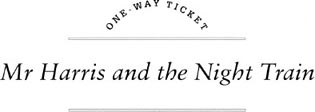
Mr Harris liked trains. He was afraid of aeroplanes, and didn't like buses. But trains – they were big and noisy and exciting. When he was a boy of ten, he liked trains. Now he was a man of fifty, and he still liked trains.
So he was a happy man on the night of the 14th of September. He was on the night train from Helsinki to Oulu in Finland, and he had ten hours in front of him.
'I've got a book and my newspaper,' he thought. 'And there's a good restaurant on the train. And then I've got two weeks' holiday with my Finnish friends in Oulu.'
There weren't many people on the train, and nobody came into Mr Harris's carriage. He was happy about that. Most people on the train slept through the night, but Mr Harris liked to look out of the window, and to read and think.
After dinner in the restaurant Mr Harris came back to his carriage, and sat in his seat next to the window. For an hour or two he watched the trees and lakes of Finland out of the window. Then it began to get dark, so he opened his book and began to read.
At midnight the train stopped at the small station of Otava. Mr Harris looked out of the window, but he saw nobody. The train moved away from the station, into the black night again. Then the door of Mr Harris's carriage opened, and two people came in. A young man and a young woman.
The young woman was angry. She closed the door and shouted at the man: 'Carl! You can't do this to me!' The young man laughed loudly and sat down.
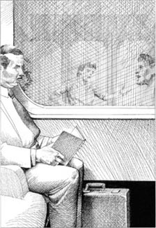
The young man laughed loudly and sat down.
Mr Harris was a small, quiet man. He wore quiet clothes, and he had a quiet voice. He did not like noisy people and loud voices. So he was not pleased. 'Young people are always noisy,' he thought. 'Why can't they talk quietly?'
He put his book down and closed his eyes. But he could not sleep because the two young people didn't stop talking.
The young woman sat down and said in a quieter voice: 'Carl, you're my brother and I love you, but please listen to me. You can't take my diamond necklace. Give it back to me now. Please!'
Carl smiled. 'No, Elena,' he said. 'I'm going back to Russia soon, and I'm taking your diamonds with me.' He took off his hat and put it on the seat. 'Elena, listen. You have a rich husband, but I – I have no money. I have nothing! How can I live without money? You can't give me money, so I need your diamonds, little sister.'
Mr Harris looked at the young woman. She was small, with black hair and dark eyes. Her face was white and afraid. Mr Harris began to feel sorry for Elena. She and her brother didn't look at him once. 'Can't they see me?' he thought.
'Carl,' Elena said. Her voice was very quiet now, and Mr Harris listened carefully. 'You came to dinner at our house tonight, and you went to my room and took my diamond necklace. How could you do that to me? My husband gave the diamonds to me. They were his mother's diamonds before that. He's going to be very, very angry – and I'm afraid of him.'
Her brother laughed. He put his hand in his pocket, then took it out again and opened it slowly. The diamond necklace in his hand was very beautiful. Mr Harris stared at it. For a minute or two nobody moved and it was quiet in the carriage. There was only the noise of the train, and it went quickly on through the dark cold night.
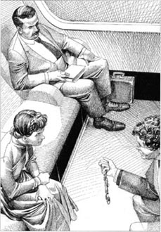
The diamond necklace in Carl's hand was very beautiful.
Mr Harris opened his book again, but he didn't read it. He watched Carl's face, with its hungry eyes and its cold smile.
'What beautiful, beautiful diamonds!' Carl said. 'I can get a lot of money for these.'
'Give them back to me, Carl,' Elena whispered. 'My husband's going to kill me. You're my brother... Please help me. Please!'
Carl laughed again, and Mr Harris wanted to hit him. 'Go home, little sister,' Carl said. 'I'm not going to give the diamonds back to you. Go home to your angry husband.'
Suddenly there was a knife in the young woman's hand. A long, bright knife. Mr Harris watched with his mouth open. He couldn't speak or move.
'Give the diamonds back to me!' Elena cried. 'Or I'm going to kill you!' Her hand on the knife was white.
Carl laughed and laughed. 'What a sister!' he said. 'What a kind, sweet sister! No, they're my diamonds now. Put your knife away, little sister.'
But the knife in the white hand moved quickly: up, then down. There was a long, terrible cry, and Carl's body fell slowly on to the seat. The colour of the seat began to change to red, and the diamond necklace fell from Carl's hand on to the floor.

There was a long, terrible cry, and Carl's body fell slowly on to the seat.
Elena's face was white. 'Oh no!' she whispered. 'Carl! Come back... come back! I didn't want to kill you!' But Carl didn't answer, and the red blood ran slowly over the floor. Elena put her head in her hands, and again in the carriage there was a long, terrible cry.
Mr Harris's face was white too. He opened his mouth, but he couldn't speak. He stood up, and carefully moved to the door. The young woman was quiet now. She didn't move or look up at Mr Harris.
In the corridor, Mr Harris ran. The guard was at the back of the train and Mr Harris got there in half a minute.
'Quickly!' Mr Harris said. 'Come quickly! An accident... a young woman... oh dear! Her brother is... is dead!'
The guard ran with Mr Harris back to the carriage. Mr Harris opened the door and they went inside.
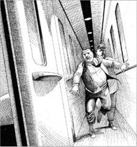
The guard ran with Mr Harris back to the carriage.
There was no dead body of a young man. There was no young woman... no blood, no knife, no diamond necklace. Only Mr Harris's bags and his hat and coat.
The guard looked at Mr Harris, and Mr Harris looked at him.
'But... ' Mr Harris began. 'But they were here! I saw them! She... the young woman... She had a knife and she... she killed her brother.'
'A knife, you say?' the guard asked.
'Yes,' Mr Harris said quickly. 'A long knife, and her brother took her diamonds, so she—'
'Ah! Diamonds!' the guard said. 'Was the young woman's name Elena?' he asked.
'Yes, it was!' Mr Harris said. 'How do you know that? Do you... Do you know her?'
'Yes – and no,' the guard said slowly. He thought for a minute, then looked at Mr Harris. 'Elena di Saronelli,' he said. 'She had dark eyes and black hair. Very beautiful. She was half-Italian, half-Finnish. He brother was a half-brother. They had the same father, but his mother was Russian, I think.'
'Was? Had?' Mr Harris stared at the guard. 'But she... Elena... she's alive! And where is she?'
'Oh no,' said the guard. 'Elena di Saronelli died about eighty years ago. After she killed her brother with a knife, she jumped off the train, and died at once. It was near here, I think.' He looked out of the window, into the night.
Mr Harris's face was very white again. 'Eighty years ago!' he whispered. 'What are you saying? Were she and her brother... But I saw them!'
'Yes, that's right,' the guard said. 'You saw them, but they're not alive. They're ghosts. They often come on the night train at this time in September. I never see them, but somebody saw them last year. A man and his wife. They were very unhappy about it. But what can I do? I can't stop Elena and Carl coming on the train.'
The guard looked at Mr Harris's white face. 'You need a drink,' he said. 'Come and have a vodka with me.'
Mr Harris didn't usually drink vodka, but he felt afraid. When he closed his eyes, he could see again Elena's long knife and could hear her terrible cry. So he went with the guard to the back of the train.
After the vodka, Mr Harris felt better. He didn't want to sleep, and the guard was happy to talk. So Mr Harris stayed with the guard and didn't go back to his carriage.
'Yes,' the guard said, 'it's a famous story. I don't remember it all. It happened a long time ago, of course. Elena's father was a famous man here in Finland. He was very rich once, but he had three or four wives and about eight children. And he liked the good things of life. So there wasn't much money for the children. Carl, the oldest son, was a bad man, people say. He wanted an easy life, and money in his hand all the time.'
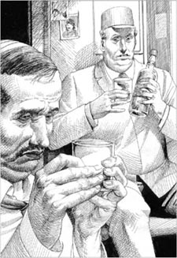
'Yes,' the guard said, 'it's a famous story.'
The train hurried on to Oulu through the black night, and the guard drank some more vodka. 'Now, Elena,' he said.'She didn't have an easy life with those three difficult men – her father, her brother, her husband. One year she visited her mother's family in Italy, and there she met her husband, di Saronelli. He was rich, but he wasn't a kind man. They came back to Finland, and Carl often visited their house. He wanted money from his sister's rich husband. Elena loved her brother, and gave him some money. But di Saronelli didn't like Carl and was angry with Elena. He stopped giving her money, and after that... well, you know the story now.'
'Yes,' Mr Harris said. 'Poor, unhappy Elena.'
Mr Harris stayed with his friends in Oulu for two weeks. They were quiet weeks, and Mr Harris had a good holiday. But he took the bus back to Helsinki. The bus was slow, and there were a lot of people on it, but Mr Harris was very happy. He didn't want to take the night train across Finland again.
lake n. a large area of water surrounded by land 湖
necklace n. a piece of jewelry that hangs around your neck 项链
stare v. to look at something or someone for a long time without moving your eyes 盯着看
whisper v. to speak very quietly 低语
bright adj. shining strongly or with plenty of light 光亮的
sweet adj. kind, gentle, and friendly 温柔的
terrible adj. making you feel afraid or shocked 可怕的
floor n. the flat surface on which you stand indoors 地板
blood n. the red liquid in a person's body 血
jump v. to push yourself suddenly up in the air using your legs 跳
ghost n. the spirit of a dead person, that some people believe they can see or feel 幽灵
vodka n. a strong clear alcoholic drink from Russia or Poland 伏特加酒〔俄罗斯、波兰出产的一种烈酒〕
hurry v. to do something or go somewhere more quickly than usual, especially because there is not much time 匆忙
poor adj. used to show pity for someone because they are so unlucky, unhappy etc. 可怜的
哈里斯先生和夜车
哈里斯先生和夜车
*此故事属于非现实题材小说
哈里斯先生喜欢坐火车。他害怕坐飞机，也不喜欢坐巴士。但是火车——空间又大又喧闹，很令人兴奋。他十岁时就喜欢坐火车，现在他已经五十了，依旧喜欢坐火车。
所以，在九月十四日那天晚上，他很开心。他在芬兰乘坐由赫尔辛基去奥卢的夜车，要在车上待十个小时。
“我带了一本书和报纸。”他心里想，“火车上还有个不错的餐厅。接下来我要和芬兰的朋友在奥卢度过两周的假期。”
火车上人不太多，所以没人来到哈里斯先生的包厢，他为此很高兴。多数人晚上坐火车都会在车上睡觉，而哈里斯先生喜欢看着窗外、看书和思考。
在餐厅吃完晚饭后，哈里斯先生回到自己的包厢，坐在靠窗的座位上。大概有一两个小时，他一直望着窗外芬兰的树木和湖泊。后来，天色渐暗，他打开书，读了起来。
午夜时分，火车停在了一个叫奥塔瓦的小车站。哈里斯先生往窗外看去，但一个人也没有看到。火车驶离车站，再度进入了茫茫黑夜。后来，哈里斯先生包厢的门开了，进来了两个人——一个年轻的男人和一个年轻的女人。
年轻的女人很生气。她关上门冲着那个男人嚷道：“卡尔！你不能这么对我！”年轻的男人哈哈大笑着坐了下来。
哈里斯先生是一个身材矮小、安静的人。他衣着朴素，说话声音很小。他不喜欢吵闹的人和大嗓门，因此他不太高兴。“年轻人总是很吵。”他心里想，“为什么他们说话不能小点儿声？”
他放下书，闭上眼睛。但是他睡不着，因为那两个年轻人在不停地争吵。
年轻的女人坐了下来，稍微降低了声音说：“卡尔，你是我的哥哥，我爱你，但是请听我说。你不能拿走我的钻石项链。快还给我，求你了！”
卡尔笑了。“不，埃琳娜。”他说，“我很快要回俄罗斯了，我要带上你的钻石。”他摘下帽子，放在座位上。“埃琳娜，听着。你有一个有钱的丈夫，但是我——我没钱。我什么都没有！没有钱我怎么生活？你不能给我钱，所以我需要你的钻石，小妹。”
哈里斯先生看着这个年轻的女人。她身材娇小，长着乌黑的头发和深色的眼睛。她脸色苍白，充满恐惧。哈里斯先生开始为埃琳娜感到难过。埃琳娜和她哥哥一眼也没看哈里斯先生。“他们看不见我吗？”他心想。
“卡尔。”埃琳娜说道。此刻她的声音非常平静，哈里斯先生仔细听着。“你今晚来我家吃饭，并且到我的房间拿走了我的钻石项链。你怎么能这么对我？这些钻石是我丈夫给我的。以前这些钻石都是他妈妈的。他肯定会非常非常生气——我很怕他。”
她哥哥笑了。他把手放进自己的口袋里，然后又拿了出来并慢慢摊开手掌。他手里的钻石项链特别漂亮。哈里斯先生盯着项链。足有一两分钟大家都没动，车厢里很安静。只有火车奔跑的声音，火车在漆黑寒冷的夜晚急速行驶。
哈里斯先生又打开书，但是他并没有读。他看着卡尔的脸——饥渴的眼神和冷酷的笑容。
“多漂亮的钻石！漂亮啊！”卡尔说道，“卖掉它们，我就能有很多钱。”
“还给我，卡尔。”埃琳娜低声说，“我丈夫会杀了我的。你是我的哥哥……请帮帮我。求你了！”
卡尔又笑起来，哈里斯先生真想揍他。“回家吧，妹妹。”卡尔说道，“我不会把这些钻石还给你的。回家吧！回到你愤怒的丈夫身边去吧！”
突然，年轻的女人拿出一把刀，那把刀长长的，寒光闪闪。哈里斯先生看到这一幕，吓得张大嘴。他说不出话来，也动弹不了。
“把钻石还给我！”埃琳娜哭喊着，“要不我杀了你！”她持刀的手没有血色。
卡尔大笑不已。“瞧我的妹妹！”他说，多么善良、温柔的妹妹呀！不。钻石现在是我的了。把你的刀拿开，妹妹。”
但是那只苍白的手握着的刀先是上晃，再猛地捅了上去。伴随着一声长长的可怕的叫声，卡尔的身体慢慢倒在了座位上。座椅被染成了红色，那条钻石项链也从卡尔的手里滑落到了地板上。
埃琳娜脸色惨白。“啊，不！”她低声说，“卡尔！别死……别死！我本不想杀你。”但是卡尔没有反应，红色的鲜血慢慢地流淌到地板上。埃琳娜抱着头，车厢里再次响起一声长长的可怕的叫声。
哈里斯先生也吓得脸色惨白。他张着嘴，但是说不出话来。他站起身来，小心翼翼地挪动到门口。年轻的女人此刻静了下来。她没有动，也没有抬头看哈里斯先生。
哈里斯先生在过道里奔跑着。列车长在火车尾部，哈里斯先生只用了半分钟就跑了过去。
“快！”哈里斯先生说道，“快来！出事了……一个年轻的女人……天哪！她的哥哥死……死了。”
列车长和哈里斯先生一起跑回包厢。哈里斯先生打开门，他们走了进去。
没有年轻男人的尸体，也没有年轻女人的身影……没有鲜血，没有刀子，没有钻石项链。只有哈里斯先生的包以及他的帽子和外套。
列车长和哈里斯先生面面相觑。
“可是……”哈里斯先生开口道，“可是他们刚才在这儿！我看到他们了。她……那个年轻的女人……她拿着一把刀，她……她杀死了她的哥哥。”
“你说一把刀？”列车长问道。
“是的。”哈里斯先生赶忙说，“一把长长的刀，她的哥哥拿了她的钻石，所以她……”
“啊！钻石！”列车长询问道，“年轻的女人是不是叫埃琳娜？”
“是的！”哈里斯先生说道，“你是怎么知道的？你……你认识她？”
“认识——也不算认识。”列车长缓慢地说道。他想了一会儿，然后看着哈里斯先生。“埃琳娜·迪萨罗奈利，”他说道，“她很漂亮——深色的眼睛和黑色的头发。她有一半意大利血统，一半芬兰血统。她曾有个同父异母的哥哥。他们有同一个爸爸，但是我觉得她哥哥的妈妈是俄罗斯人。”
“过去？曾经？”哈里斯先生盯着列车长，“可是她……埃琳娜……她还活着！她在哪里？”
“啊，不！”列车长说道，“埃琳娜·迪萨罗奈利大约在八十年前死了。她用刀杀死哥哥之后，就跳下火车，当场死亡。我想就在这附近。”他看着窗外的茫茫黑夜。
哈里斯先生的脸再次变得惨白。“八十年前。”他嘀咕着，“你在说什么？难道她和她哥哥……但是我看到他们了！”
“是的，没错。”列车长说道，“你看到了他们，但是他们不是大活人，他们是鬼魂。他们经常在九月的这个时候到夜车上来。我从来没看见过他们，不过去年有人见过。一个男人和他的妻子，他们因此非常不满。但是我能做什么呢？我阻止不了埃琳娜和她哥哥上火车。”
列车长看着哈里斯先生惨白的脸。“你得喝杯酒，”他说道，“来跟我一起喝杯伏特加。”
哈里斯先生不常喝伏特加，但是他感到害怕。闭上眼睛的时候，他又能看到埃琳娜的长刀，能听到她可怕的叫声。于是，他跟随列车长一起返回火车的车尾。
喝完伏特加后，哈里斯先生感觉好了些。他不想睡觉，而列车长又很愿意和他聊天。所以哈里斯先生和列车长待在一起，没有回到他的包厢。
“是的，”列车长说道，“这是个很有名的故事，我都记不太全了。当然这故事发生在很久以前了。埃琳娜的爸爸在芬兰这儿是个名人。他曾经很富有，但是他有三四个老婆，大概八个孩子。而且他喜欢享受生活，所以没有多少钱给孩子们。大家都说卡尔这个大儿子是个混球儿，他贪图安逸，总希望手里有花不完的钱。”
火车在黑夜中急匆匆地开向奥卢，列车长又喝了点儿伏特加。“至于埃琳娜，”他说，“她没过过好日子，因为那三个难相处的男人——爸爸、哥哥和丈夫。有一年她去意大利探望娘家的人，在那里结识了她的丈夫——迪萨罗奈利。他人很富有，但没有一点儿同情心。他们回到芬兰，卡尔经常去他们家。他想从富有的妹夫那里要些钱。埃琳娜很爱她的哥哥，所以给了他一些钱。但是迪萨罗奈利不喜欢卡尔，他很生埃琳娜的气。他不再给埃琳娜钱，之后……哦，你现在知道故事的结局了。”
“是的。”哈里斯先生说道，“可怜又不幸的埃琳娜。”
哈里斯先生和他的朋友在奥卢待了两周。那是平静的两周，哈里斯先生假期过得很愉快。不过他选择坐巴士回赫尔辛基。巴士很慢，人又多，不过哈里斯先生很开心。他再也不想在芬兰坐夜班火车了。
Activities: Before Reading
ACTIVITIES
Before Reading
1 What is a one-way ticket? Do you know, or can you guess?
1) It's for a journey from A to B and B to A.
2) It's for a journey from A to B.
3) It's for a journey from A to B, B to C, and C to A.
2 Read the story introduction, and the back cover. What do you know or what can you guess about these stories? Tick one box for each sentence.
The Girl with Green Eyes
1) The beautiful young wife is the girl with green eyes.
YES □／NO □
2) She is going on holiday in Finland.
YES □／NO □
3) She loses something important on the train.
YES □／NO □
4) She gets angry with her new husband.
YES □／NO □
5) Her husband has an accident on the train.
YES □／NO □
South for the Winter
6) Tom Walsh is looking for work.
YES □／NO □
7) He is in a hurry.
YES □／NO □
8) He makes some new friends on the train.
YES □／NO □
9) Something bad happens to him.
YES □／NO □
10) He learns something about life.
YES □／NO □
Mr Harris and the Night Train
11) Mr Harris is a middle-aged man.
YES □／NO □
12) He is going to visit his mother.
YES □／NO □
13) He wants to meet people and talk to them on his journey.
YES □／NO □
14) He sleeps all through the night.
YES □／NO □
15) He sees something terrible on the train.
YES □／NO □
3 What is going to happen in these stories? Can you guess? Tick one box for each sentence.
Story 1: The Girl with Green Eyes
Story 2: South for the Winter
Story 3: Mr Harris and the Night Train
| 1 | 2 | 3 | |
| 1) Someone dies. | □ | □ | □ |
| 2) Someone falls in love. | □ | □ | □ |
| 3) Someone goes to prison. | □ | □ | □ |
| 4) Someone gets a lot of money. | □ | □ | □ |
| 5) Someone loses something. | □ | □ | □ |
| 6) Someone jumps off the train. | □ | □ | □ |
Activities: While Reading
ACTIVITIES
While Reading
1 Read The Girl with Green Eyes. Who did what in this story? How many true sentences can you make?
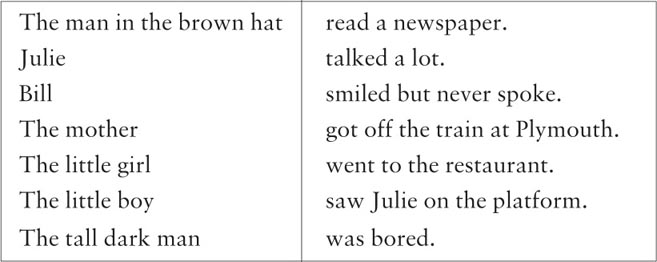
2 Here are some untrue sentences about the story. Change them into true sentences.
1) The man in the brown hat was an interesting man.
2) The tall dark man read the back page of Julie's newspaper.
3) Nobody got on the train at Plymouth.
4) Julie said goodbye to Bill when she got off the train.
5) Bill was very happy when Julie left.
6) The man in the brown hat wanted Bill to remember Julie.
3 Read South for the Winter. Then put these sentences into the right order, to make a short paragraph.
1) They took all his clothes out of the bag,
2) and so he went to the prison.
3) Tom didn't know anything about this money,
4) two policemen came into Tom's carriage.
5) but the dollars were in his bag,
6) A lot of US dollars fell out on to the table.
7) They told Tom to go with them into the station building.
8) and then picked it up and turned it over.
9) When the train stopped at a village,
10) and to bring his bag with him.
4 Read Mr Harris and the Night Train. Choose the best question-word for these questions, and then answer them.
Who / What / Why
1)... did Mr Harris do after dinner?
2)... came into Mr Harris's carriage after Otava?
3)... did Carl want Elena's diamond necklace?
4)... gave the diamonds to Elena?
5)... did Carl do when Elena took out a knife?
6)... was in the carriage when Mr Harris came back?
7)... never saw the ghost of Carl and Elena?
8)... did Mr Harris take the bus back to Helsinki?
Activities: After Reading
ACTIVITIES
After Reading
1 Complete this crossword with words from the stories.
ACROSS
2) Elena di Saronelli was one of these. (5)
4) Bill's stories were not interesting; they were______. (6)
8) When you wait for a train, you stand on this. (8)
9) A 'room' on a train. (8)
10) You sit on this on a train. (4)
11) Tom went to this place for the winter. (6)
12) Julie was______with Bill. (5)
DOWN
1) You walk along this on a train. (8)
3) A train stops at this. (7)
5) This man works on a train. (5)
6) Elena killed Carl with this. (5)
7) Julie and the tall dark man talked with these. (4)
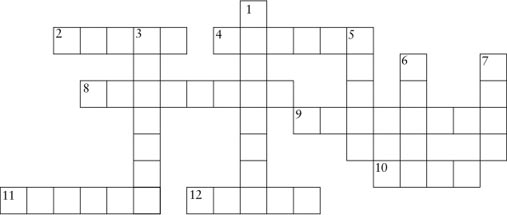
2 In The Girl with Green Eyes, Julie and the tall dark man did not talk, but here is a 'conversation' between their eyes, in the wrong order. Write it out in the correct order and put in the speakers' names. The tall dark man speaks first (number 7).
1)______'Of course you can. Bill is more interested in his stories than in his beautiful wife. And you are beautiful, Julie. You have the most wonderful eyes.'
2)______'I can't do that! What about Bill?'
3)______'No buts. Come with me to Italy. You can be happy with me. Don't you want to be happy?'
4)______'How wonderful! I'd love to go to Italy. But I'm going to St Austell.'
5)______'Say nothing. That's the best way. Just get off the train at Plymouth after me.'
6)______'Yes, that's true. I am bored. But he's my husband, and I can't just leave him... can I?'
7)______'Do you see my book about Italy? I'm going to visit these four famous cities.'
8)______'All right. Wait for me on the platform!'
9)______'Well, what about him? You don't like him. You're bored with him.'
10)______'OK, I have wonderful eyes, but...'
11)______'St Austell's a boring town. Come with me to Italy.'
12)______'Yes. Yes, I do. But what do I say to Bill?'
3 Tom (in South for the Winter) writes a letter home to his mother, but he gets a lot of things wrong. Find his mistakes and correct them. And he forgets to say one important thing. What is it?
Dear Mum
I left Italy last autumn and came north by bus. I'm staying here in Cyprus for the summer. I've got a job in a hotel, and I've got lots of money. So life is easy. Next year, I'm going to America with an old friend – his name's Ivan.
We're going to start a new life in Los Angeles. Hope you're well. Give my love to Burnham-on-Sea!
Love from Tom
4 When Mr Harris arrived in Oulu, his friend met him at the station. Complete their conversation with these words. (Use one word for each gap.)
blood, bus, but, diamond, happened, journey, killed, knows, man, nothing, right, sister's, sleep, terrible, there, train, true, why
FRIEND: Mr Harris, how nice to see you! Did you have a good______?
MR HARRIS: Well, not very good. I didn't______all night.
FRIEND: Oh, that's bad. But______couldn't you sleep?
MR HARRIS: Because______were two ghosts in my carriage.
FRIEND: Ghosts? How exciting! What______?
MR HARRIS: It was a young______and his sister. He had a necklace, but it was his______necklace and she wanted it back. And in the end she______her brother with a knife. It was______! There was______everywhere – I saw it! I ran to get the guard, ______when we came back, there was______there.
FRIEND: Ah, wait a minute. It was Elena di Saronelli and her brother Carl, yes?
MR HARRIS: That's______, but how did you know?
FRIEND: Oh, everyone in Finland______that story.
MR HARRIS: But is it______?
FRIEND: Of course it is. You saw their ghosts, didn't you? Well, well, how exciting! And when you take the______back to Helsinki...
MR HARRIS: Oh no, I'm going back to Helsinki by______. No more ghosts for me, thank you!
5 What do you think about ghosts? Do you agree (A) or disagree(D) with these sentences?
1) There are ghosts.
2) There aren't ghosts.
3) Some people can see ghosts, but other people can't see them.
4) Perhaps there are ghosts, and perhaps there aren't; we just don't know.
6 Here is a new illustration for one of the stories. Find the best place for it, and answer these questions.
The picture goes in the story ______.
1) Who is the girl in the picture?
2) What is she doing, and why is she doing it?
3) Where are the other two people in this story?
Now write a caption for the illustration.
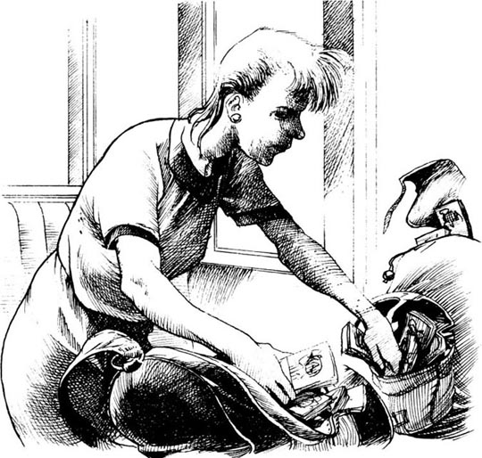
Caption: ________________________________________________
7 What did you think about the people in these stories? Were the men nicer people than the women? Did you feel sorry for anybody? Choose some names, and complete some of these sentences.
Julie / Bill / the tall dark man / the man in the brown hat
Tom / Melanie / Carol
Mr Harris / Elena / Carl
1) I feel sorry for______because______.
2) I think______was a nice person but______.
3)______was right to______.
4)______was wrong to______.
5) I think______did a very bad thing.
6)______did the worst thing.
8 Here are some new titles for the three stories. Which titles go with which stories? Some are better titles than others. Can you say why?
| Saturday Night in Sofia | Love Before Plymouth |
| A Man Called Bill | Happy Days in Finland |
| Murder in the Night | Green Eyes, Brown Eyes |
| A Loving Sister | Don't Talk to Strangers |
| A Holiday in St Austell | The Ghost Train |
| The American Girls | An Easy Winter |
封底
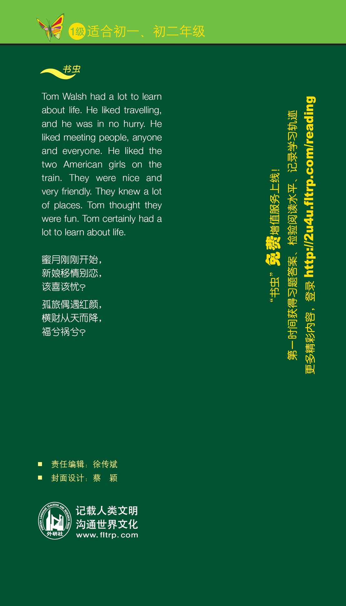